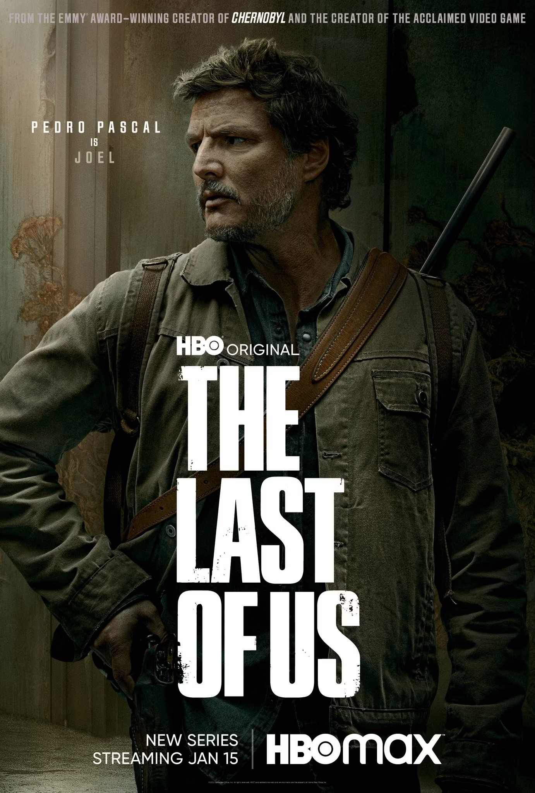
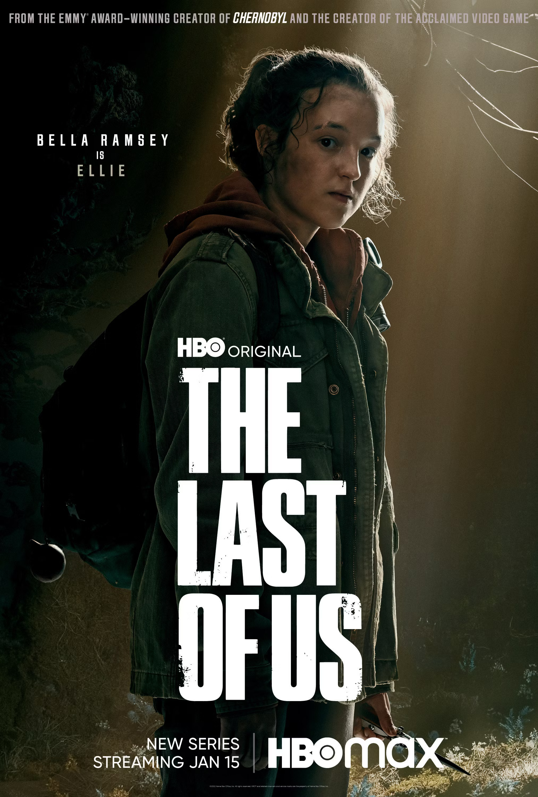
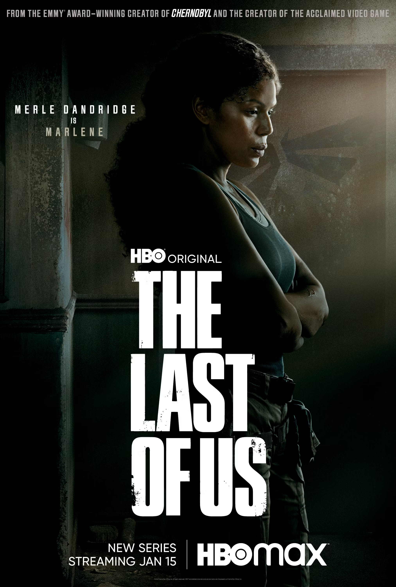
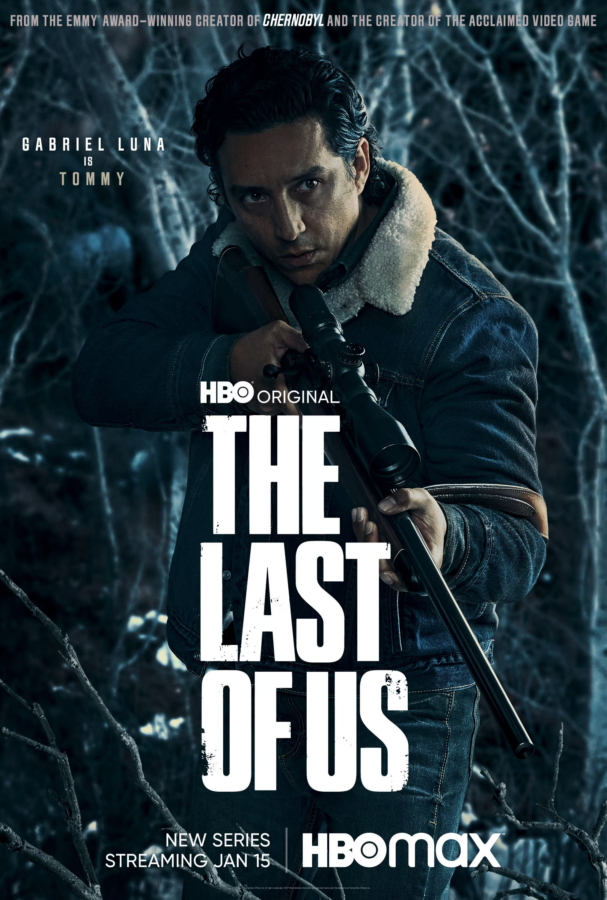
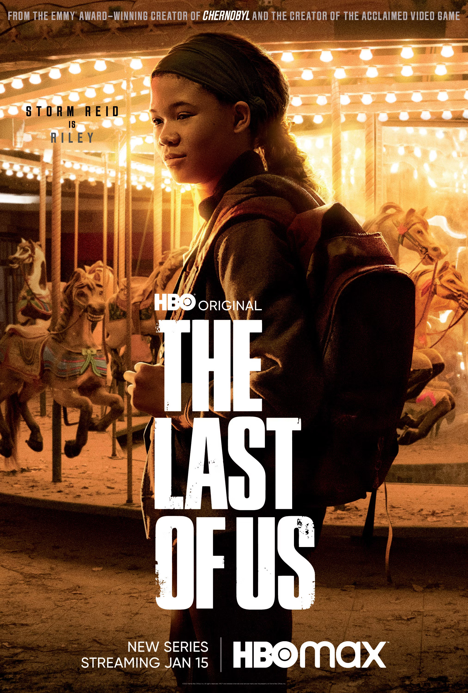
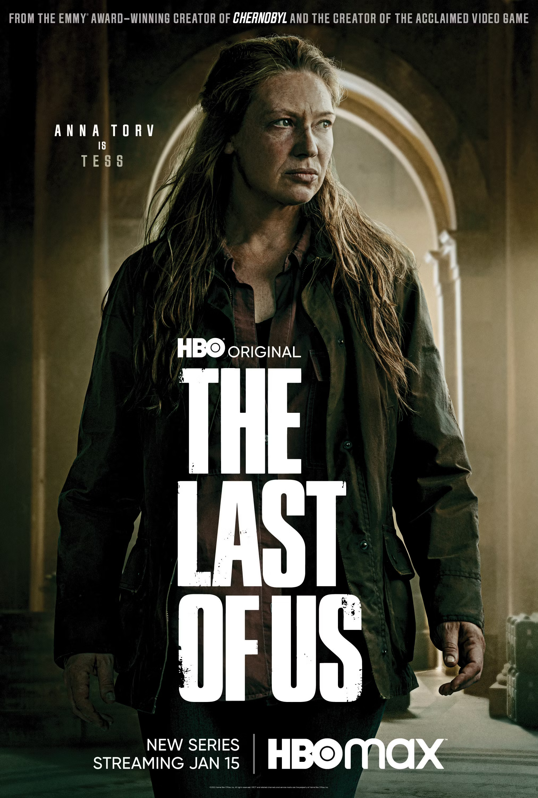

|  |  |  |
|---|---|---|
| Joel | Ellie | Marlene |
| Joel starts the series as an average patrolman, but after the world falls apart, he becomes a smuggler. Joel is a broken man, but he’s also a survivor. Joel knows that it’s kill or be killed in this world, meaning he doesn’t always make morally just decisions but always protects the people he loves. | Ellie Williams, is the potential key to humanity's survival. Ellie grew up as an orphan in Boston. She was infected with the Cordyceps brain infection but managed to recover. | Marlene is the reason for Joel and Ellie’s grand adventure. Know as the Queen Firefly, Marlene is the head of the Fireflies Militia Group. As a close friend of Ellie’s mother, once Marlene discovers that the child possibly holds the key to a cure, Marlene makes it a mission to reverse engineer a vaccine. |
|  |  |  |
| Tommy | Riley | Tess |
| Tommy Miller is a supporting character in The Last of Us Part I and is the younger brother of Joel and Uncle of Sarah Miller. Tommy and Joel survived the early years of the outbreak before eventually going their separate ways. The two reunite during Joel and Ellie’s journey. | Riley grew up in Boston, where she saw the Fireflies in action and defended their methods. She eventually meets Ellie, and the two quickly become best friends. | Tess is Joel’s closest ally and smuggling partner. The two would trade with survivors outside of Boston. After a confrontation with the Fireflies' head, Marlene, Tess, and Joel were tasked with smuggling Ellie across the country. Joel was the muscle, while Tess was the brains. |